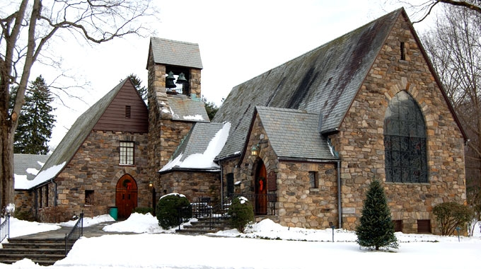
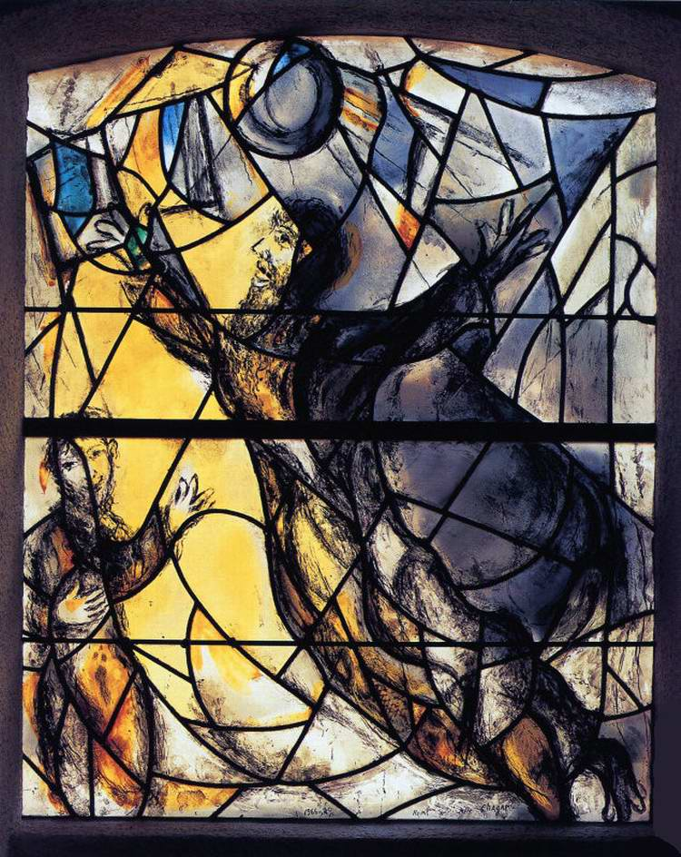
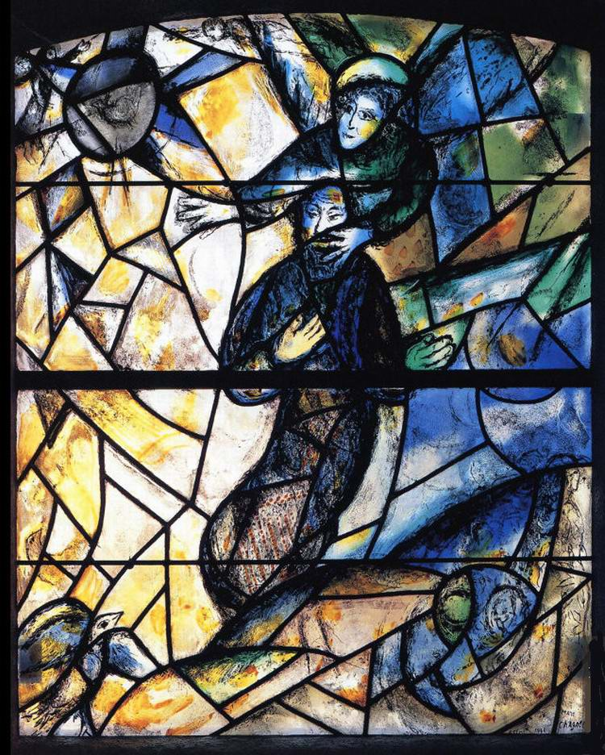
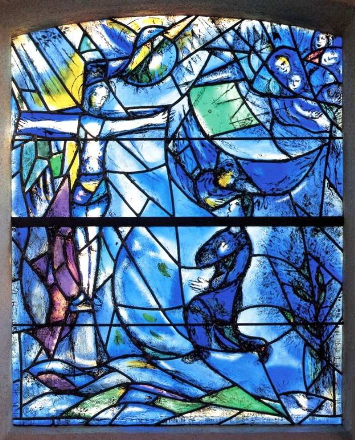
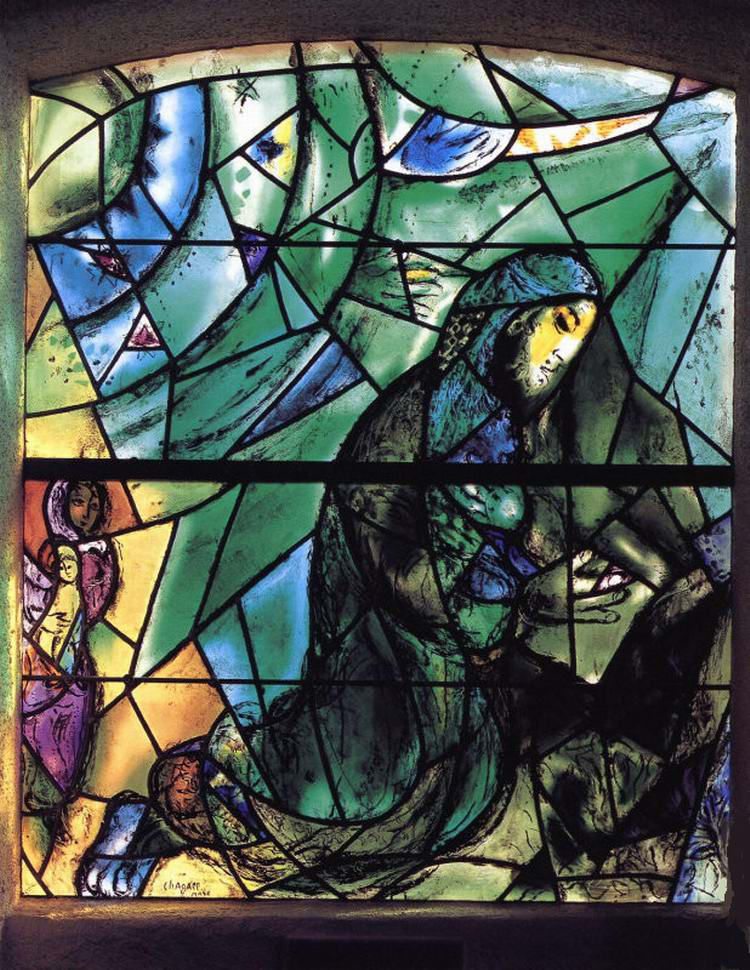
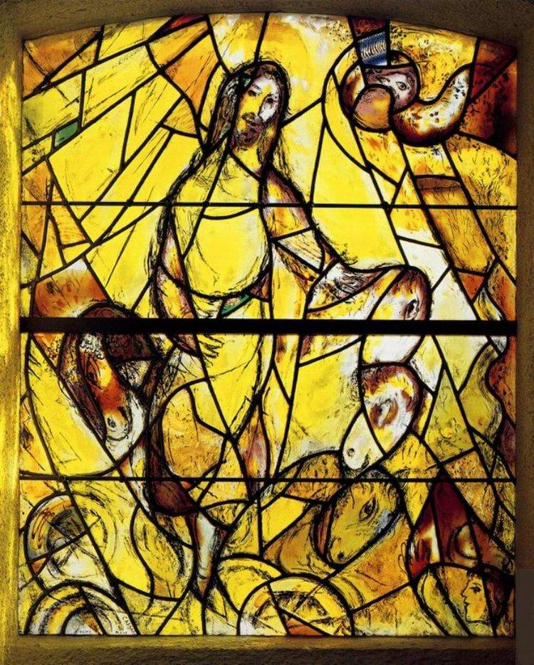
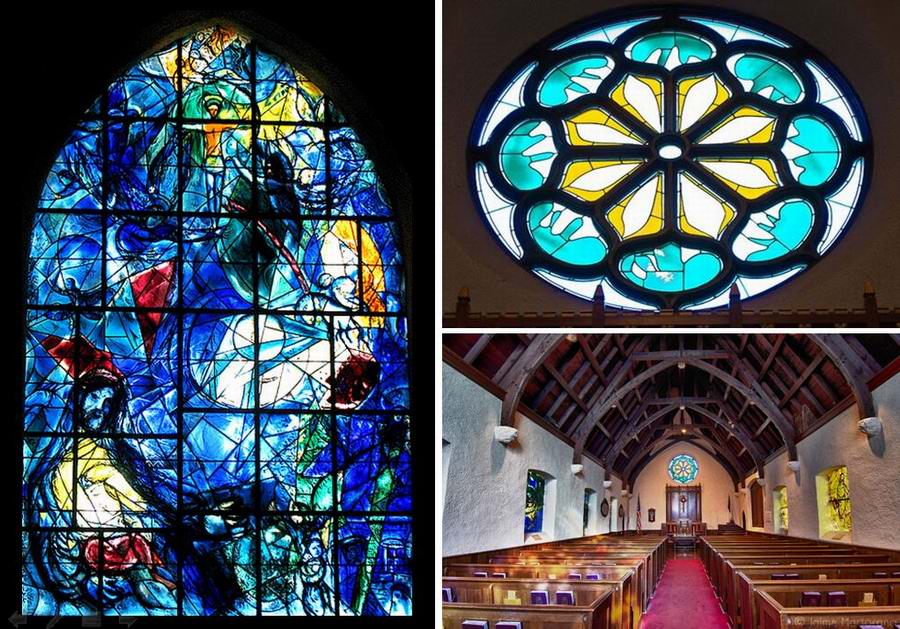
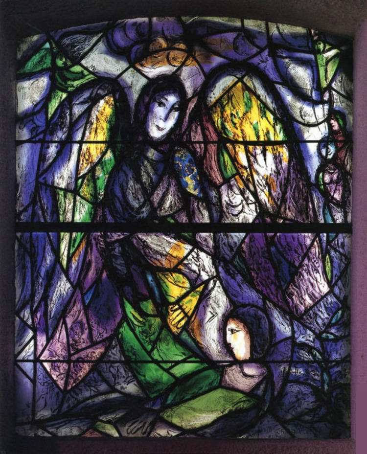
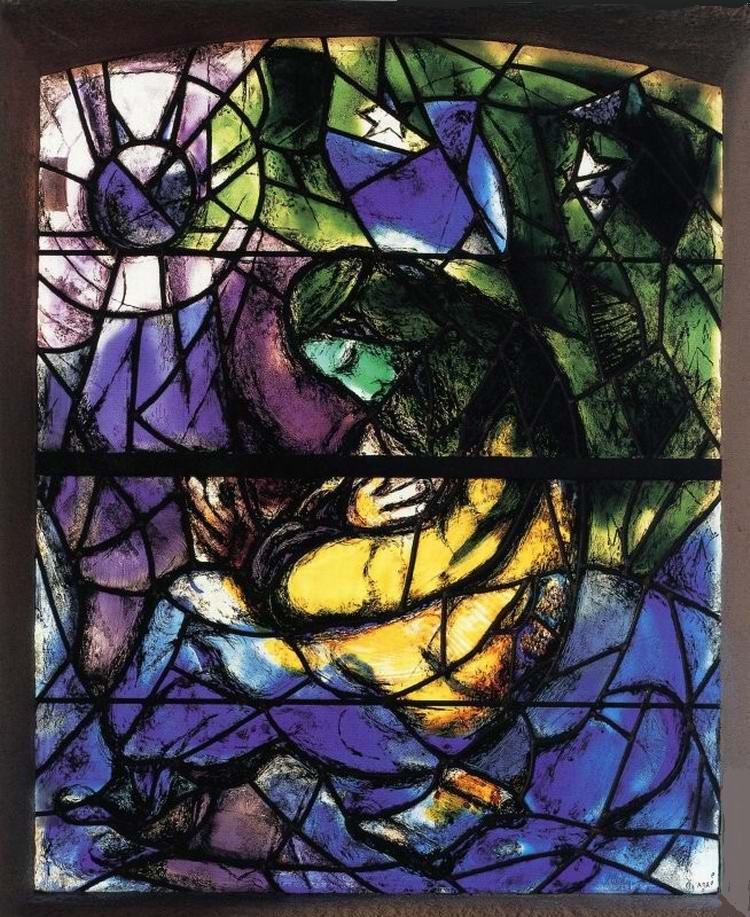

Лучшие витражи МАРКА ШАГАЛА
«Когда я, в одиночестве моего чтения, размышлял над Святой Книгой, ее голос звучал во мне столь сильно, что за ним я почти не различал конкретного собеседника. Каждый пророк растворялся для меня в своих пророчествах. Теперь же, рассматривая иллюстрации Шагала, я иначе читаю эту древнюю Книгу. Я яснее слышу, потому что я яснее вижу, потому что Шагал — ясновидец; он передает говорящий голос.
Говоря откровенно: Шагал просветлил мой слух». Гастон Башляр (Gaston Bachelard) — французский философ и искусствовед.

Большая часть людей считают Марка Шагала художником. Он был гораздо больше, чем художник, своего рода «ретранслятор». Его кисть на полотне завершала цепь, которая начиналась в его душе, путешествуя через мистический кобальтого цвета мир, преломлялась в его разуме и выплескивалась в плоскости нашей реальности.
Шагал, по своему собственному признанию, пытался привнести в свои работы четвертое измерение.

Лучшие витражи Марка Шагала
В 1941 году руководство Музея современного искусства в Нью-Йорке пригласило художника переселиться из контролируемой нацистами Франции в США, и летом 1941 года семья Шагала с помощью фонда помощи, субсидированного Рокфеллерами приезжает в Нью-Йорк. Двадцатью годами позже по заказу семьи тех же Рокфеллеров в 1960г. он создает для их церкви (Union Church of Pocantico Hills), построенной в родовом имении Рокфеллеров, цикл из 9 витражей.

Построил эту церковь Джон Рокфеллер младший в 1921 году. Эта небольшая приходская церковь — место уникальное не только потому, что является фамильной церковью Рокфеллеров, но и из-за высочайшей художественной ценности в ней заключенной. По мнению экспертов, витражи, созданные для нее Шагалом являются лучшими его витражами.

Шагал, обязанный своим спасением в начале 1940-х годов фонду Рокфеллера, с радостью откликнулся на предложение Рокфеллеров, и специально приехал сюда, чтобы увидеть церковь и оценить фронт работ. Так появился витраж Добрый Самаритянин, установленный здесь в 1964 году.

Если витраж другого великого художника Матисса - как бы гость в этой же церкви, то девять окон Шагала – главные действующие лица в этой церкви.
Восемь окон меньшего формата (по четыре с каждой стороны) стоят под огромного размера «Добрым самаритянином».

При входе в церковь голова посетителя рефлекторно поворачивается по направлению большому витражу «Добрый самаритянин» - популярному Ново Заветному сюжету. Красный, желтый, зеленый цвета драгоценного стекла сбалансированы с излюбленным Шагалом насыщенным синим сновидением.


В течение нескольких последующих лет Шагал сделал еще восем витражных окон для этой церкви. После второго окна, представляющего «распятие», он сделал интерпретации историй шести великих пророков ТАНАХа – Йоэля, Йеремияу, Йехезкейла, Даниэля, Ишайяу и Элияу. Его окно с херувимами завершило этот витражный ансамбль.

С 1960-х годов Шагал в основном создает монументальные произведения - мозаики, витражи, шпалеры. В начале 1960-х годов по заказу правительства Израиля Шагал создает мозаики и шпалеры для здания парламента в Иерусалиме. После этого успеха он получает множество заказов на оформление католических, лютеранских храмов и синагог по всей Европе, Америке и в Израиле.
композитор George Gachechiladze с муз.размышнениями над витражами Шагала.
P.S.: Один мой хороший знакомый, видевший витражи своими глазами, поделился своими впечатлениями:
"Мы специально поехали туда с женой туда. Это примерно 30 миль к северу от NYC. Семья Рокфелеров подарила это имение - огромный парк с прекрасным дворцом, там музей сейчас + храм с витражами городу. Надо сказать, что роза Матисса замечательно хороша! Но на фоне Шагала - она выглядит как халтура :) . Мы провели там несколько часов. Впечатление незабываемое. Словами это передать не умею: их просто не хватает. Думаю, что ради этих витражей посетить США стоит...